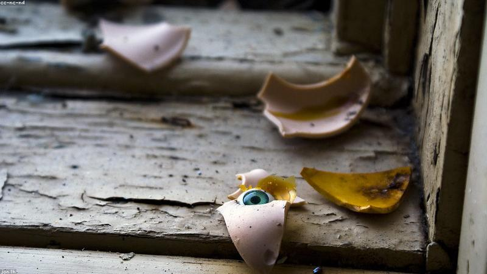

NO. 24
壞掉的娃娃
它笑，是因為不能不笑。
廢屋拾到一隻瓷娃娃，嘴角裂，眼窩空。女兒抱回家，每晚說話給它聽。
某夜她起夜，見娃娃在女兒枕邊，頭轉了180度，對她裂嘴。
天亮娃娃復原。女兒說：『它說它以前的主人，也常跟它說話，後來不說了。』
女兒問：『媽，妳會不說話嗎？』她沒有答。

廢屋拾到一隻瓷娃娃，嘴角裂，眼窩空。女兒抱回家，每晚說話給它聽。
某夜她起夜，見娃娃在女兒枕邊，頭轉了180度，對她裂嘴。
天亮娃娃復原。女兒說：『它說它以前的主人，也常跟它說話，後來不說了。』
女兒問：『媽，妳會不說話嗎？』她沒有答。